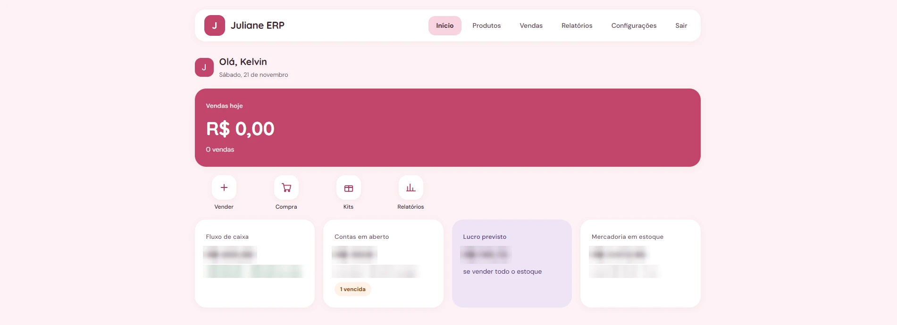

Deslize para ver as telas
Sistema em uso
Juliane ERP
Problemauma loja controlava estoque, vendas e contas no papel e no improviso.
O que fizum sistema de gestão feito para o celular, com produtos com foto, estoque, vendas (à vista e a prazo), kits, fluxo de caixa, contas a pagar e receber, relatórios em CSV e login individual que registra quem fez cada movimentação.
- Next.js
- React
- TypeScript
- Tailwind CSS
- Supabase
- Vercel
Sistema de cliente: sem link público.